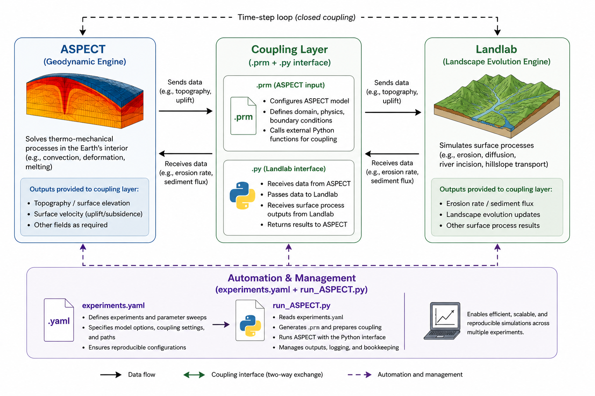
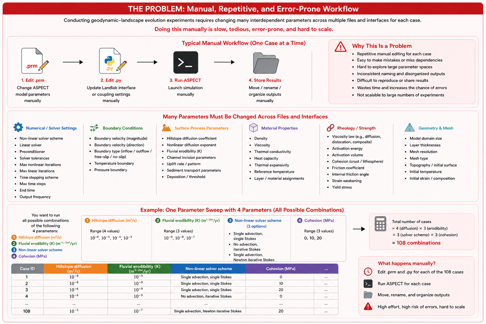
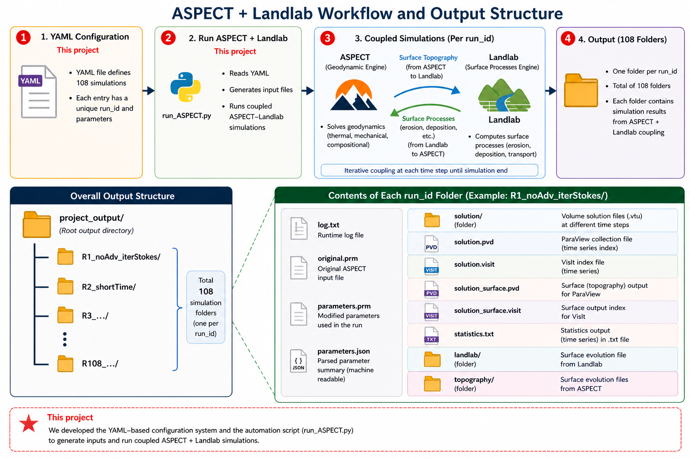

Introduction
Overview
The ASPECT–Landlab coupling framework is designed to integrate large-scale
geodynamic simulations with surface process modeling in a flexible and
reproducible way. At its core, the workflow is driven by a YAML-based
configuration system that defines experiment parameters, simulation variants,
and run conditions in a structured and human-readable format. The
run_ASPECT.py script acts as the central orchestration engine: it parses
the YAML configuration, generates ASPECT .prm input files, organizes
simulation directories, and launches coupled simulations. During runtime,
ASPECT handles lithospheric deformation and thermomechanical processes,
while Landlab is embedded as a surface process component to simulate
landscape evolution. This modular design enables systematic parameter
exploration and seamless coupling between tectonics and surface processes.
{kind=link}

Architecture and Key Components
Component |
Description |
Link |
|---|---|---|
ASPECT |
|
|
Landlab |
|
|
|
|
|
|
|
|
GitHub |
|
(add repo link) |
Problem: Lack of Automation in ASPECT Workflows
The problem we address is the lack of a flexible and automated workflow for
running multiple simulations in ASPECT. Existing scripts such as
.prm of ASPECT and .py of Landlab often rely on hardcoded parameters, fixed paths, and manual
setup, making it difficult to manage experiments, explore parameter variations,
and ensure reproducibility.
By introducing a pythom-based (experiments.yaml``+ ``run_ASPECT.py) configuration system, this project externalizes all
parameters into a structured format. This enables simulations to be generated,
organized, and executed automatically in a consistent and scalable manner.
{kind=link}

Approach: Placeholder-Based Parameterization
To address the lack of automation in ASPECT workflows, we adopt a
placeholder-based parameterization strategy within the core coupling layer
files (.prm and .py). Instead of hardcoding values, key parameters are
represented as placeholders that are dynamically replaced at runtime using a
pythom-based (run_ASPECT.py + experiments.yaml) configuration system. This design enables efficient parsing and generation of
multiple parameter combinations, allowing systematic exploration of model
scenarios. As a result, diverse geodynamic–surface process coupling experiments
can be set up, executed, and tested in a consistent and scalable manner,
significantly reducing manual effort and improving reproducibility.
In the figure below, placeholders are highlighted in red. Their corresponding
values and string substitutions are automatically injected into the .prm
and .py files during runtime, enabling seamless execution of the coupling
simulation.

Output: Automated and Structured Simulation Runs
The final output of this approach is a fully automated and well-organized set
of simulation runs, where each parameter combination is executed in a dedicated
run directory. For every run, the system generates the corresponding .prm
and .py files with all placeholders resolved, along with associated model
outputs such as topography and surface evolution data. This structured setup
enables easy comparison across experiments, improves traceability of parameter
choices, and ensures reproducible geodynamic–surface process coupling results.
{kind=link}
